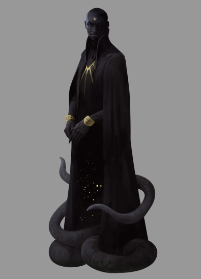

Душа и посланник мрачных Иных богов, крадущийся хаос Ньярлатхотеп, безликий и многоликий властитель пустыни. В древности он почитался как истинный бог Египта: великий Сфинкс когда-то имел его ужасные черты, а чёрный фараон Нефрен-Ка возвел ему храм без окон, в котором призвал Ньярлатхотепа из Сияющего Трапецоэдра в облике дикого вихря с тройным пылающим глазом и перепончатыми крыльями. За это время имя черного фараона было сбито со всех скрижалей, а поклонение Ньярлатхотепу запрещено, его храм разрушен, статуи уничтожены, жрецы распяты.
Но его культ не исчез: принесённый из Египта в средневековую Европу крестоносцами, он превратился в ведьмовской. И Ньярлатхотеп, принимая облик человека с угольно-черной кожей и копытами вместо ног являлся тем искателям, которые познали скрытые тропы и проникли на грань миров, чтобы провести их в средоточие предельного Хаоса, где они вписали бы свое тайное имя кровью в книгу Азатота. Так влияние культа Ньирлатхотепа всегда проявляло себя в человеческой истории.
В середине ХIХ века в Новой Англии появилась секта Звездной Мудрости, которая восстановила древнеегипетский культ, хранила и почитала обнаруженный ими Сияющий Трапецоэдр. А в ХХ веке открытия в высшей математике, квантовой физике и неевклидовой геометрии удивительным образом пересеклись с магическими знаниями ведьмовских культов Средневековья. Пророчества же сновидцев гласят, что в ХХI веке Ньярлатхотеп явится вновь. Подобный фараону, он придёт из Египта, будет говорить о науках, электричестве, психологии и призывать мёртвых. Он обретёт огромную славу, но его появление будет лишь предвестием мирового хаоса.
Впервые появился в рассказе Г. Ф. Лавкрафта «Ньярлатхотеп» (Nyarlathotep, 1920), вдохновлённом сновидением и был развит в повестях «Сновидческие искания неведомого Кадата» (The Dream-Quest of Unknown Kadath, 1927) и «Сны в ведьмином доме» (The Dreams in the Witch House, 1932). Вследствии был перенят и дополнен в египетском цикле рассказов Роберта Блоха 1936-1937 годов.
